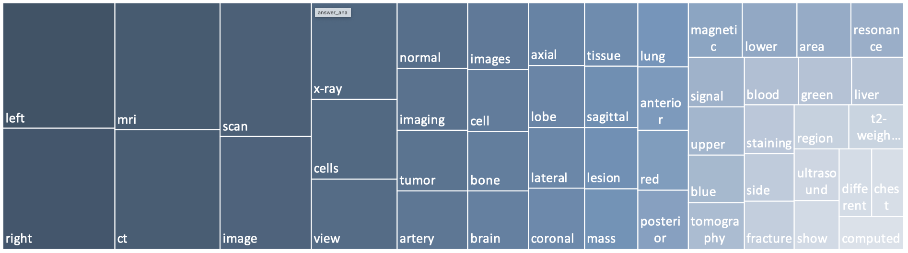
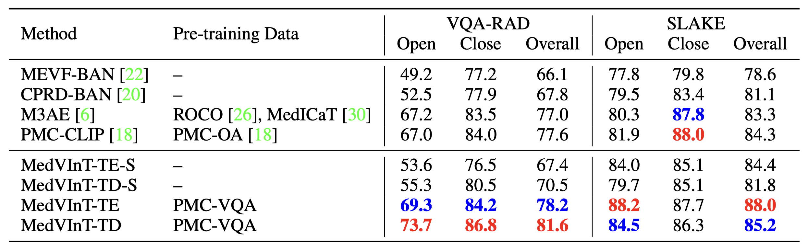

PMC-VQA: Visual Instruction Tuning for Medical Visual Question Answering
|
|
1CMIC, Shanghai Jiao Tong University
|
2Shanghai AI Lab
|
Abstract
In this paper, we focus on the problem of Medical Visual Question Answering (MedVQA), which is crucial in efficiently interpreting medical images carrying vital clinic-relevant information. Firstly, we reframe the problem of MedVQA as a generation task that naturally follows the human-machine interaction. Specifically, we propose a generative-based model for medical visual understanding by aligning visual information from a pre-trained vision encoder with a large language model.
Secondly, we establish a scalable pipeline to construct a large-scale medical visual question-answering dataset, named PMC-VQA, which contains 227k VQA pairs of 149k images that cover various modalities or diseases. Thirdly, we pre-train our proposed model on PMC-VQA and then fine-tune it on multiple public benchmarks, e.g., VQA-RAD and SLAKE, outperforming existing work by a large margin.
Additionally, we propose a test set, which is significantly more challenging than all existing ones, even the best model struggles to solve.
Architecture

(a) The proposed architecture of MedVInt, mainly consists of three components: a visual encoder to extract visual features, a language encoder to encode textual context, and a multimodal decoder to generate the answer;
(b) The proposed question-answer pairs generation pipeline.
The PMC-VQA Dataset
Several examples of challenging questions and answers along with their respective images. To answer questions related to these images, the network must acquire sufficient medical knowledge, for example, for the first two images, it is essential to recognize the anatomy structure and modalities; for the third image, recognizing the X-ray image pattern of pathologies is necessary; for the final two images, apart from the basic biomedical knowledge, the model is also required to discern colors, differentiate subfigures, and perform Optical Character Recognition (OCR) is required.
Analysis on Images
The top 20 figure types in PMC-VQA, cover a wide range of diagnostic procedures.
Analysis on Questions
Question distribution of the training set by their first four words. From left to right are all questions, questions started with ``What'' and questions started with ``Which''.
The ordering of the words starts towards the center and radiates outwards.
We found a surprising variety of question types, including "What is the difference...", "What type of imaging...", and "Which image shows...". Most questions range from 5 to 15 words.
Analysis on Answers
Detailed information about the top 50 words that appeared in the answers.
The words in answers primarily encompass positional descriptions such as left and right, image modality such as CT/MRI, and specific anatomical regions.

Results
R1: VQA-RAD and SLAKE
Comparison to SOTA approaches on VQA-RAD and SLAKE. We use the blank model for evaluation.
Pre-training data indicates whether the model is pre-trained on the medical multi-modal dataset before training on the target dataset.
The best result is in red, the second-best result is in blue

R2: PMC-VQA Benckmark
Comparison of baseline models using different pre-trained models on both open-ended and multiple-choice tasks. We reported the results on PMC-VQA-test / PMC-VQA-test-clean.
R3: Qualitative Results